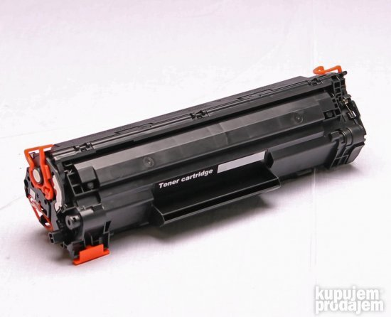
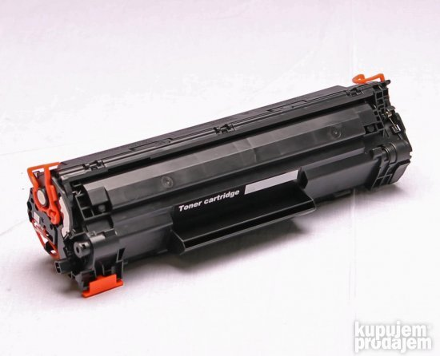
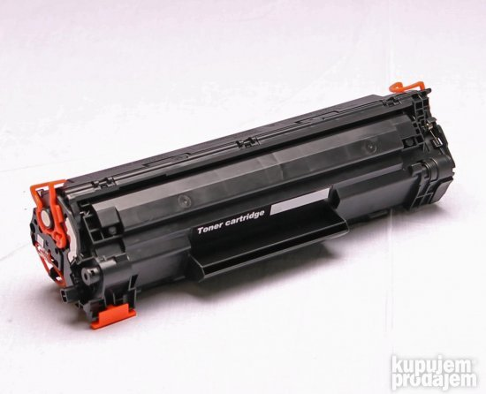

.jpg)
.jpg)
.jpg) 

.JPG)
.jpg)
.jpg)
.jpg)
Svi znamo koliko koštaju novi laserski štampači i da se ne isplati kupovati novi svaki put kada se potroši neka boja. Naprotiv, punjenje i recikliranje tonera je postalo široko popularno i često upotrebljavano kao legitiman i efikasan način produžetka rada štampača.
Ostali ste bez crne boje na svom laserskom štampaču? Nemojte prerano da se nervirate oko investicije koju morate da uložite u ovaj uređaj. Punjenje tonera je tu da Vam obezbijedi novu količinu boje koju ste potrošili, a da Vaš štampač radi i dalje kao nov i pritom ne potrošite ogromne sume novca.
Kako Vam se koja boja potroši, Vi jednostavno dopunite stari, zamijenite prazan punim i nastavite gdje ste stali sa štampanjem. Ponekad se ljudi boje da dopunjavaju tonere, jer misle da neće dobiti istu boju kao što je bila ranije. Budite uvjereni da hoćete.
Dođite u servis računara i štampača ALFA jer je to servis u kojem se vrši profesionalno punjenje, prodaja i zamjena tonera za štampače po izuzetno povoljnim cenama.
Naš tim, potpuno kvalifikovan i obučen servis, sa višegodišnjim iskustvom, riješiće svaki problem na vašem fotokopiru ili štampaču. Tokom ovih 15 godina postojanja servisa, stekli smo reputaciju i postali smo sinonim za kvalitetno servisiranje, redovno održavanje i popravku fotokopira i štampača.
